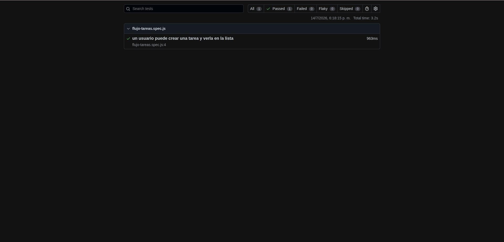
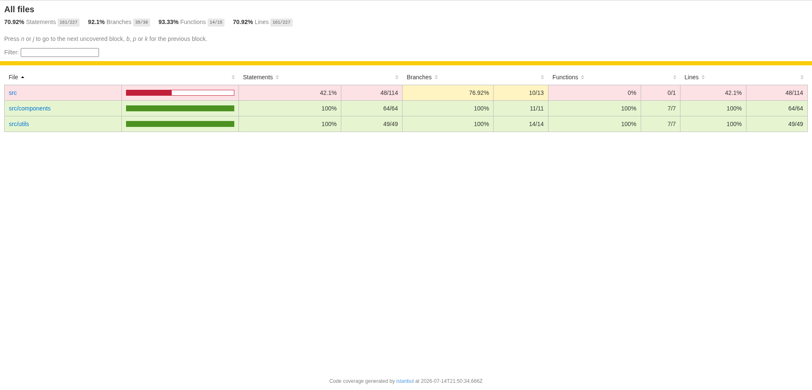
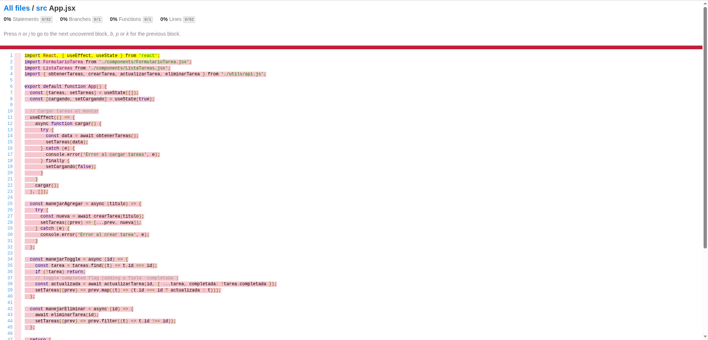
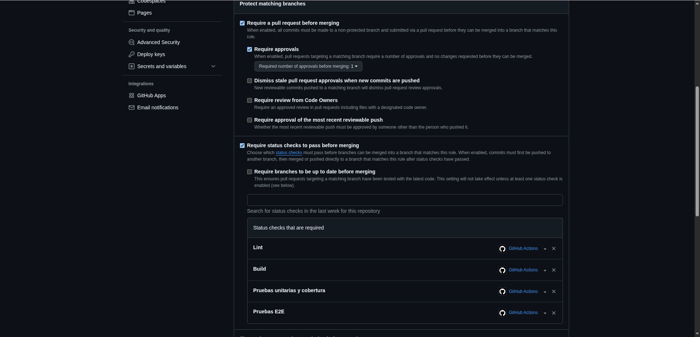
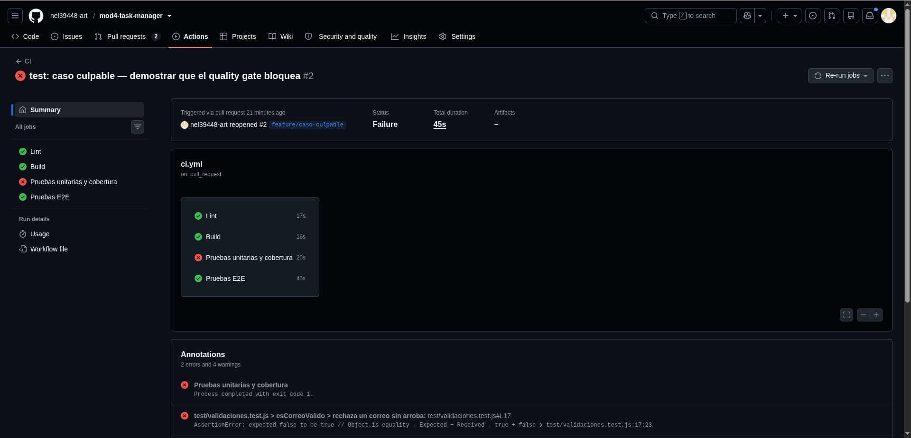
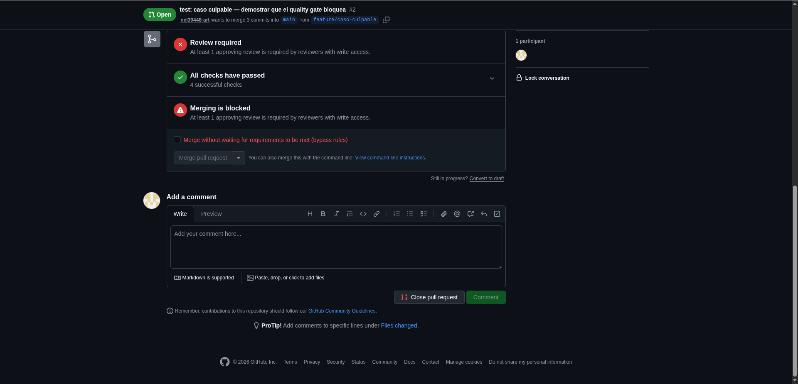
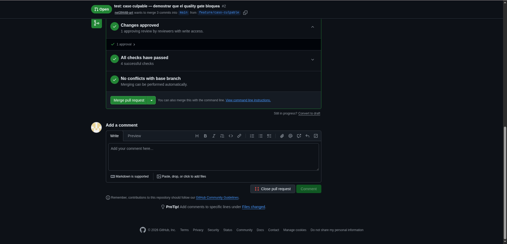
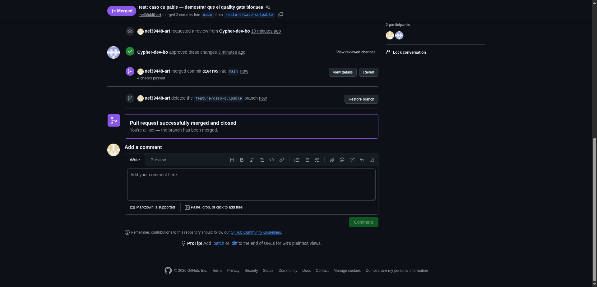
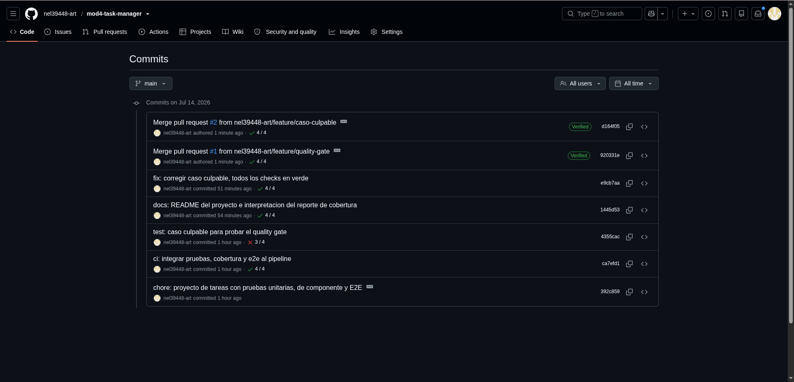
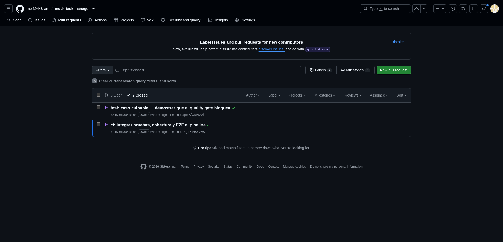

Esta sesión cierra la Unidad 2 del módulo. El objetivo era que el proyecto no solo se pruebe, sino que además se mida (cobertura) y se proteja solo: que sea el propio sistema, y no una revisión manual, el que decida si un cambio puede entrar a la rama principal.
El trabajo se hizo sobre el gestor de tareas construido en las sesiones anteriores: un frontend en React con Vite y un backend en Express con una API REST de tareas. Sobre esa base se añadieron tres piezas: una prueba de extremo a extremo con Playwright, un reporte de cobertura con umbral mínimo, y un pipeline de integración continua que actúa como quality gate en cada Pull Request.
Antes de empezar los laboratorios hubo que resolver dos problemas heredados del proyecto:
src/app.js exportaba la aplicación de Express pero nunca llamaba
a app.listen(), de modo que el backend jamás se levantaba. Se creó
src/server.js para arrancarlo, dejando app.js intacto para que
las pruebas de API con Supertest lo sigan importando sin abrir un puerto.Además se añadió ESLint y el script de build, que faltaban para poder exigir
lint y compilación en el pipeline.
Una prueba de extremo a extremo (E2E) no simula piezas aisladas: abre un navegador real, carga la aplicación y la usa como lo haría una persona.
Se instaló Playwright y se configuró playwright.config.js con la URL base del
proyecto y un bloque webServer, que hace que Playwright levante la aplicación por
su cuenta antes de correr las pruebas.
// playwright.config.js
export default defineConfig({
testDir: './e2e',
use: { baseURL: 'http://localhost:5173' },
webServer: {
command: 'npm run dev',
url: 'http://localhost:5173',
reuseExistingServer: !process.env.CI,
},
})
La prueba recorre el flujo completo: entrar a la aplicación, crear una tarea y verificar que aparece en la lista.
// e2e/flujo-tareas.spec.js
test('un usuario puede crear una tarea y verla en la lista', async ({ page }) => {
await page.goto('/')
await page.getByLabel('Nueva tarea').fill('Comprar pan')
await page.getByRole('button', { name: 'Agregar' }).click()
await expect(page.getByText('Comprar pan')).toBeVisible()
})
Se usan getByLabel y getByRole en lugar de selectores CSS. La
diferencia importa: un selector CSS se rompe en cuanto alguien cambia una clase de estilo,
mientras que buscar el elemento por su etiqueta visible o su rol es la forma en que lo
encontraría una persona real. La prueba sobrevive a los rediseños que no cambian el
comportamiento.

npx playwright show-report): 1 passed, 0 failed.app.listen(). La prueba E2E detectó, en su
primera ejecución, un fallo real que ninguna de las pruebas unitarias de la Sesión 3 había
visto — precisamente porque esas pruebas nunca levantan la aplicación de verdad.
Un segundo detalle de configuración: Vitest recoge por defecto los archivos
*.spec.js, así que intentaba ejecutar la prueba de Playwright y fallaba. Hubo que
excluir la carpeta e2e/ en vitest.config.js para que cada herramienta
corra solo lo suyo.
La cobertura mide qué porcentaje del código llegan a ejecutar las pruebas. Se instaló el
proveedor @vitest/coverage-v8 y, sobre todo, se configuró un bloque
thresholds con umbrales mínimos.
thresholds, Vitest
se limita a informar el porcentaje y el pipeline sigue en verde aunque la cobertura se
desplome. Con el umbral configurado, el comando devuelve error si no se alcanza — y eso es lo
que convierte la cobertura en una condición real del quality gate, y no en un número decorativo.
| Métrica | Obtenido | Umbral mínimo | Estado |
|---|---|---|---|
| Statements | 70.92 % | 60 % | Cumple |
| Branches | 92.10 % | 50 % | Cumple |
| Functions | 93.33 % | 60 % | Cumple |
| Lines | 70.92 % | 60 % | Cumple |

coverage/index.html).El reporte deja al descubierto un archivo en rojo: src/App.jsx, con
0 % de cobertura. Es el componente que orquesta toda la aplicación —carga las
tareas al montar y coordina crear, completar y eliminar—, y ninguna prueba unitaria lo monta.

src/App.jsx al 0 %: todas las líneas sin ejecutar, incluidos los tres bloques catch.Lo relevante no es el número, sino qué es lo que queda sin probar. Los tres
catch del componente hoy solo hacen console.error: si la API falla, el
usuario no ve ningún mensaje de error, y ninguna prueba lo detectaría. La prueba E2E cubre este
archivo de forma indirecta, pero solo por el camino feliz; el camino triste —la API caída—
sigue sin ejercitarse. También quedan sin cubrir los dos return res.status(404) de
src/app.js, es decir, el caso de "la tarea no existe".
catch
de App.jsx y los dos 404 de la API.src/utils/validaciones.js marca 100 %, pero eso solo dice que cada línea se
ejecutó, no que las aserciones comprueben algo significativo. La cobertura mide ejecución,
no calidad de la verificación.vite.config.js, src/main.jsx y
src/server.js se excluyeron del cálculo: inflarían el porcentaje sin decir
nada sobre el riesgo real.El archivo .github/workflows/ci.yml quedó con cuatro trabajos que se ejecutan en
cada Pull Request contra main: Lint, Build,
Pruebas unitarias y cobertura y Pruebas E2E. Los dos primeros
venían de la Sesión 2; los dos últimos son el aporte de esta sesión.
pruebas:
name: Pruebas unitarias y cobertura
runs-on: ubuntu-latest
steps:
- uses: actions/checkout@v4
- uses: actions/setup-node@v4
with: { node-version: '20', cache: 'npm' }
- run: npm ci
- run: npx vitest run --coverage
e2e:
name: Pruebas E2E
runs-on: ubuntu-latest
steps:
- uses: actions/checkout@v4
- uses: actions/setup-node@v4
with: { node-version: '20', cache: 'npm' }
- run: npm ci
- run: npx playwright install --with-deps chromium
- run: npx playwright test
El cambio se subió a la rama feature/quality-gate y se abrió el Pull Request #1,
donde los cuatro trabajos terminaron en verde.
Con los trabajos ya ejecutados al menos una vez, en Settings → Branches se editó la
regla de protección de main y se seleccionaron los cuatro checks como
obligatorios, además de mantener la aprobación de un revisor heredada de la Sesión 1.

main: los cuatro status checks obligatorios y "Require approvals: 1".Desde la Sesión 1 esta casilla estaba activada pero vacía: nadie la respaldaba con checks reales. A partir de aquí, GitHub bloquea físicamente el botón de merge de cualquier Pull Request si el lint, el build, las pruebas, la cobertura o el E2E fallan.
Para comprobar que el gate no es decorativo, se rompió una prueba a propósito en la rama
feature/caso-culpable: la aserción de rechaza un correo sin arroba
pasó de toBe(false) a toBe(true).

La anotación del propio GitHub señala el punto exacto del delito:
test/validaciones.test.js > esCorreoValido > rechaza un correo sin arroba AssertionError: expected false to be true test/validaciones.test.js:17:23

Se corrigió la aserción y se subió el arreglo sobre la misma rama. Los cuatro checks volvieron a verde. Como la regla exige además la aprobación de un revisor con permiso de escritura —y GitHub no permite aprobar el propio Pull Request—, se invitó como colaboradora a Cypher-dev-bo, que revisó y aprobó ambos Pull Requests.



main cuenta la historia completa: el commit culpable con 3/4 checks, el arreglo con 4/4, y los dos merges.
Lo que más enseña de esta sesión no es la configuración en sí, sino tres cosas que ocurrieron por el camino.
La prueba E2E encontró en su primer intento un fallo real —el backend que nunca arrancaba— que dieciséis pruebas unitarias en verde no habían detectado. Cada nivel de prueba ve cosas distintas, y las unitarias pueden estar todas en verde sobre una aplicación que no funciona.
La cobertura es útil precisamente cuando no sale bien. El 70 % global no
dice gran cosa; lo que dice algo es que App.jsx esté al 0 % y que sus
catch nunca se ejecuten, porque eso significa que hoy la aplicación puede fallar en
silencio delante del usuario y ninguna prueba se enteraría. Un número alto tranquiliza; un
número honesto señala dónde trabajar.
El gate se comportó como debía cuando se lo puso a prueba. Un cambio con una sola aserción rota quedó bloqueado sin que ninguna persona tuviera que revisarlo, y el merge solo se desbloqueó cuando el arreglo devolvió los cuatro checks a verde y llegó la aprobación del revisor. Ese es el punto: el merge final no fue legítimo porque alguien confiara en el código, sino porque el sistema completo —lint, build, pruebas, cobertura y E2E— confirmó automáticamente que el cambio era seguro.
| Requisito | Estado |
|---|---|
| Prueba E2E con Playwright en verde, cubriendo el flujo feliz completo | Cumplido (Figura 1) |
Reporte de cobertura generado, con umbral mínimo en vitest.config.js | Cumplido (Figuras 2 y 3) |
El ci.yml corre lint, build, pruebas con cobertura y E2E en cada PR | Cumplido |
| Status checks obligatorios seleccionados en Settings → Branches | Cumplido (Figura 4) |
| Pull Request bloqueado por un check en rojo | Cumplido (Figuras 5 y 6) |
Merge real a main con todos los checks en verde | Cumplido (Figuras 7 a 10) |
main con los cuatro
checks en verde y la aprobación del revisor cruzado (Figuras 7 a 10).